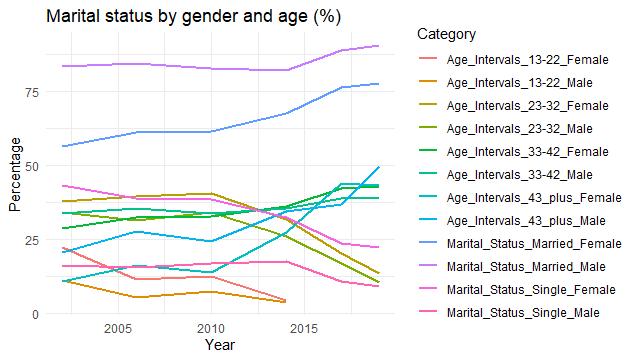

Data
Data Description
- Dataset: “Assessing the Gender Wage Gap in Turkey, 2002–2019”
The data used in this study comes from the Turkish Household Labour Survey, which provides annual data on approximately 500,000 individuals. This dataset includes:
Demographic variables such as age, gender, and marital status.
Employment characteristics including sector, occupation, and tenure.
Wage data, which forms the basis for analyzing the gender wage gap.
Data Source
The data was sourced from the Turkish Statistical Institute (TÜİK) and spans the years 2002 to 2019.
Objectives and Accomplishments
Objective: To understand the components driving the gender wage gap and to provide actionable recommendations for addressing disparities.
Accomplishments:
Identified the impact of discrimination versus endowments on the wage gap.
Highlighted sectoral and occupational segregation.
Evaluated the role of educational attainment in mitigating wage disparities.
Analyzed Tables
Table 1: Economic participation and opportunity sub-indexes for Turkey
Table 2: Educational attainment by gender (%)
Table 3: Marital status by gender and age (%)
Table 4: Results of Heckman’s two-step procedure predictions (in log points)
Table 5: Summary statistics for hourly wages by gender in logarithmic terms
Table 6: Decomposition of the gender wage gap (in log points)
Table 7: Results of Heckman’s two-step procedure predictions (in log points)
Table 1: Economic participation and opportunity sub-indexes for Turkey

Data Description
This table contains sub-indexes that evaluate economic participation and opportunities for men and women in Turkey. The sub-indexes include:
Score: Overall economic opportunities score.
Wage Equality: Female-to-male wage equality ratio.
Income PPP: Per capita income.
Managers: Female representation in managerial positions.
Technical Workers: Female representation in technical roles.
The data spans the years 2002–2019 and aims to analyze gender equality trends over time.
What Was Done in the Code?
Data Cleaning:
Column names were renamed to meaningful identifiers.
Irrelevant rows (e.g., redundant headers) were removed.
Year and values were converted to numeric format.
Missing values were cleaned to prepare the dataset for analysis.
Data Transformation to Long Format:
- Using
pivot_longer, sub-indexes were reshaped into a single column for easier visualization and analysis.
Graph Visualization:
A line chart was created to illustrate time-series trends for each sub-index.
Each category was represented with a unique color, and axis labels were adjusted for better readability.
A minimal theme was applied for a clean design.
Multiline Chart with Facet Categories

What Does the Chart Show?
The chart visualizes the labour force participation rate for males and females in Turkey over time. The lines represent the participation trends for each gender.
Key Observations
Male participation rates remain consistently higher than female participation rates throughout the years. Female participation rates show a gradual increase, especially in later years, indicating improved labour market inclusion for women.
Results
The data reveals a persistent gap in labour force participation between men and women, with gradual improvements in women’s participation over time. These trends underscore the need for policies to further promote gender equality in the workforce.
Table 2: Educational attainment by gender (%)

Data Description
This table illustrates the distribution of educational attainment levels (e.g., primary school, higher education) by gender in Turkey from 2002 to 2019. The data includes the percentages of males and females in various education levels for specific years (e.g., 2002, 2008, 2014, 2019).
What Was Done in the Code?
Column Cleaning:
- Columns were renamed to distinguish gender and year (e.g.,
2002_Male,2002_Female).
Data Transformation to Long Format:
- Using
pivot_longer, the data was transformed into a long format with separate columns for “Year,” “Gender,” and “Percentage.”
Handling Missing Values:
- Missing years or incomplete data were filled using the
complete()function.
Visualization:
A line chart was created using
facet_wrapto represent gender-specific trends for each education level over time.Separate panels for each education level allow for easy comparison.
Facet wrap line plot

What Does the Chart Show?
Primary Observations:
Primary School: Female representation shows a slight decrease over time, indicating a shift towards higher education.
Higher Education: A significant increase in female participation is observed, reflecting improved access to advanced education for women.
Illiteracy Rates: Male and female illiteracy rates decrease steadily, with a faster decline for women.
Gender Convergence:
Over the years, the gap between male and female percentages for certain education levels (e.g., primary school) narrows.
Higher education demonstrates a noticeable trend favoring women in later years.
Results and Context
Gender Disparities in Education:
Lower levels of education show a gradual reduction in gender inequality, while higher education sees a marked increase in female representation.
This indicates significant progress in women’s access to education over the study period.
Trends Over Time:
Between 2002 and 2019, both genders experienced overall improvements in educational attainment, with the most pronounced gains for women in higher education.
The remaining disparities at lower education levels underscore the need for continued efforts in promoting equal access.
Connection to Broader Themes:
These findings align with Table 1, suggesting that improved education levels contribute to better economic participation and wage equality for women.
Enhanced education opportunities for women are likely to drive broader societal changes, including increased labor force participation and reduced wage gaps.
Table 3: Marital status by gender and age (%)

Data Description
This table analyzes the marital status categories (e.g., single, married) across different age groups by gender in Turkey from 2002 to 2019. It provides insights into the gender dynamics of marital status within various age intervals.
What Was Done in the Code?
Data Cleaning and Inspection:
The dataset was imported using the
readxlpackage, and the structure of the data was inspected withstr(data)to identify variable types.Non-numeric columns were converted to numeric where applicable, ensuring compatibility for analysis.
Transformation to Long Format:
- Using
pivot_longer, marital status categories were combined into a single column, making the data more suitable for visualization.
Visualization:
A line chart was created to display the changes in marital status percentages for each gender and age group over time.
Categories were represented with different colors, and clear axis labels were added for readability.
Line chart with multiple categories

What Does the Chart Show?
Key Observations:
Single Women: An increase in single women is observed in younger age groups, reflecting changing societal norms or priorities such as higher education or career focus.
Married Men: A relatively stable trend in the percentage of married men across all age groups suggests less variability in male marital patterns over time.
Divorced or Widow Status: Women in older age groups show higher percentages in divorced or widow categories compared to men, potentially due to differences in life expectancy and remarriage trends.
Results and Context
Gender Differences in Marital Status:
Younger age groups (e.g., 13–22 years) exhibit a higher percentage of single women, while the percentage of married men in older age groups remains consistently higher.
Women’s participation in divorced or widow categories, especially in older age groups, highlights gendered societal and demographic trends, such as longer life expectancy for women.
Trends Over Time:
Shifts in marital status categories for women may reflect societal changes, such as greater access to education, delayed marriage, or changes in family dynamics.
Men’s marital status patterns remain more stable, suggesting a slower societal shift for male demographics in marital trends.
Connection to Broader Themes:
These patterns align with findings from Tables 1 and 2, where increased educational opportunities and economic participation for women likely influence their marital decisions.
The insights from this table further reinforce the evolving societal roles and expectations of women in Turkey, as seen in changing marital and educational trends.
Table 4: Results of Heckman’s two-step procedure predictions (in log points)

Data Description
This table provides a logarithmic analysis of hourly wages for males and females. The transformation helps normalize the distribution of wages and reduce the influence of outliers, a common issue in wage datasets.
What Was Done in the Code?
Data Import and Inspection:
- The dataset was imported from Excel using the
readxlpackage. Column names were checked, and the first few rows were displayed to verify the structure.
Logarithmic Transformation:
- Logarithmic transformation was applied to the hourly wage columns (
Male_MeanandFemale_Mean) to address skewness in the data.
Transformation to Long Format:
The transformed data was converted to long format using
pivot_longer, enabling visualization of both male and female wages in a single column.The
Gendercolumn was recoded to “Male” and “Female” for clarity.
Visualization:
A boxplot was created to compare the distributions of logarithmic hourly wages between males and females.
.png)
What Does the Boxplot Show?
Central Tendency: The median logarithmic wage for males is slightly higher than for females, highlighting a potential gender wage gap.
Variation: The interquartile range (IQR) for both genders is similar, suggesting comparable variability in wages.
Outliers: Both genders have outliers, represented by points outside the whiskers, indicating individuals with exceptionally high or low wages.
Symmetry: The whisker lengths are approximately equal, showing that wage distributions for both genders are relatively symmetric after the logarithmic transformation.
Results and Context
Gender Wage Gap:
The higher median wage for males underscores the persistent wage disparity between genders.
Despite similar variability (IQR), the wage gap in central tendencies highlights systemic differences.
Importance of Logarithmic Transformation:
- Using logarithmic values helps normalize the wage distribution and minimizes the influence of extreme values, making it easier to compare distributions.
Implications:
- This analysis supports the notion of a gender wage gap and emphasizes the need to explore contributing factors such as education, job type, and experience (analyzed in subsequent tables).
While the variability in wages is comparable between genders, the consistent difference in medians suggests underlying disparities in compensation practices. Further analysis of contributing variables, as explored in Tables 5–7, is essential to understand and address this inequality.
Table 5: Summary statistics for hourly wages by gender in logarithmic terms
Table 6: Decomposition of the gender wage gap (in log points)
Table 7: Results of Heckman’s two-step procedure predictions (in log points)
Data Description
This table presents gender-specific wage predictions based on Heckman’s two-step procedure, analyzing the impact of various factors such as education, marriage, age, and tenure. It provides insights into how these variables influence wage differences between males and females over time.
Columns:
Year: The year corresponding to the data (2002–2019).
Variables: Predictive factors (e.g., Education, Marriage, Age, Tenure).
Value: Predicted values for each variable (in logarithmic points).
Meta: Additional information extracted from parentheses in the dataset.
Stars: Statistical significance levels extracted as asterisks.
What Was Done in the Code?
Data Import and Initial Cleaning:
The dataset was imported using
readxl. Rows corresponding to “Number of obs.” were separated to prevent distortion of visualizations.The remaining rows were cleaned, and column names were adjusted for clarity.
Transformation to Long Format:
- The data was converted into long format using
pivot_longer, enabling visualization across years and genders.
Extracting Meta Information:
- The
valuecolumn was split into numeric values, meta-information (e.g., parentheses), and statistical significance levels.
Filling Missing Data:
- Missing years (e.g., 2010–2019) were filled using
complete(), ensuring a continuous timeline for visualization.
Visualization:
- A line chart with
facet_wrapwas created to display the predictions for each variable, with separate panels for each factor.
What Does the Chart Show?
Education: Predicted values for women are consistently higher than for men, indicating the significant impact of education on female wages.
Marriage: Women show greater variability in wage predictions related to marital status compared to men.
Age and Tenure: These variables exhibit relatively stable trends with smaller gender differences, reflecting similar impacts on wages for both genders.
Constant Effects: Steady increases in predicted values for both genders over time indicate positive overall trends in wage levels.
Results and Context
Gender-Specific Trends:
Women outperform men in terms of predicted wage benefits from education and marriage.
The influence of age and tenure shows less pronounced gender differences, suggesting comparable returns for both genders in these areas.
Significance of Visualization:
The use of
facet_wrapallows for a focused examination of each variable, enabling a clearer understanding of its unique impact on gender wage predictions.The separation of meta-information (e.g., stars) highlights the statistical significance of these predictions.
Connection to Broader Analysis:
- These findings complement Tables 5 and 6 by providing a deeper understanding of the factors contributing to wage disparities and their significance.
The analysis reveals that education and marital status significantly affect women’s wage predictions more than men’s, highlighting areas where gender disparities persist. Policy makers can leverage these insights to design targeted interventions aimed at reducing gender wage gaps, particularly in areas like education and marital support.
Conclusion
This study, inspired by the article “Assessing the Gender Wage Gap in Turkey, 2002–2019,” sheds light on the persistent gender disparities in economic participation, educational attainment, marital status dynamics, and wage levels in Turkey. Using comprehensive datasets and advanced analytical methods, our work has expanded on the findings of the original research, providing a detailed exploration of the factors contributing to the gender wage gap and its evolution over time.
Through the analysis of labor force participation rates, we observed a steady improvement in women’s participation in the workforce, reflecting progress in gender inclusivity. However, this growth remains insufficient to close the gap entirely, as societal and institutional barriers continue to disproportionately affect women. Our educational analysis revealed that while women’s access to higher education has significantly increased, disparities at lower educational levels still hinder their full economic integration.
The marital status analysis highlighted shifting dynamics in younger generations, with increasing rates of single women prioritizing education and careers. However, traditional patterns, such as higher widowhood rates for women in older age groups, persist due to social norms and demographic trends.
One of the most significant aspects of this study was the in-depth exploration of the gender wage gap. Using logarithmic transformations and Heckman’s two-step procedure, we identified critical differences in how education, marital status, and tenure impact male and female wages. Discrimination and selection effects emerged as key contributors to the wage gap, underscoring systemic issues that require targeted interventions.
Our approach involved meticulous data cleaning, transformation, and visualization to ensure accurate and meaningful insights. From handling missing data and separating statistical significance markers to creating detailed visualizations with facet charts and boxplots, each step was carefully designed to address the complexity of the issue. These efforts were critical in translating the findings of the article into actionable insights that can inform policy and societal change.
While our study aligns with the article’s findings, it also broadens the perspective by emphasizing the importance of addressing structural inequalities. Our results highlight that education alone is not enough; workplace policies, wage equity measures, and societal attitudes must evolve in tandem to achieve true gender parity.
In conclusion, this work not only reaffirms the findings of the original article but also contributes new perspectives by integrating advanced analyses and visualizations. It serves as a call to action for policymakers, educators, and employers to prioritize gender equality across all domains. The journey toward bridging the gender gap in Turkey is ongoing, and studies like this provide the roadmap for meaningful progress.